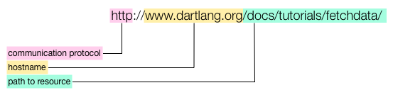

动态获取数据
从服务器或者文件获取数据。
Web 应用通常用 JSON (JavaScript Object Notation) 格式数据在服务器和客户端之间通讯。 数据可以 serialized 序列化 为 JSON 字符串 在服务器和客户端之间传输， 获取到数据后再解析为对象。 该教材演示如何用 dart:convert 库来生产和消费 JSON 数据。 通常 JSON 数据都是动态加载的， 所以该教程也演示了如何 用 HttpRequest 从 HTTP 服务器获取数据。 对于 web 应用而言， HttpRequest 有浏览器提供，并且 受浏览器安全策略限制。
- 关于 JSON
- 把数据序列化为 JSON 格式
- 解析 JSON 数据
- 关于 URI 和 HTTP 请求
- 用 getString() 函数来加载一个文件
- 用 HttpRequest 来加载文件
- 其他资源
- 接下来干啥？
关于 JSON
由于 JSON 数据是基于文本的轻量级格式， 所以非常方便人类阅读和撰写。 使用 JSON，各种数据类型都可以 用字符串来代表，例如 list 和 map。
动手试试！
下面是 its_all_about_you 应用，
显示各种数据格式的 JSON 字符串。
修改输入框中的值来查看
每种数据类型的 JSON 格式字符串。
dart:convert 库包含两个用来 操作 JSON 字符串的函数：
| dart:convert 函数 | 描述 |
|---|---|
| JSON.decode() | 从 JSON 字符串中创建 Dart 对象。 |
| JSON.encode() | 把 Dart 对象序列化为 JSON 字符串。 |
需要导入 dart:convert 到 你的代码中 才可以使用这些函数：
import 'dart:convert';JSON.encode() 和 JSON.decode() 函数可以自动处理如下 Dart 类型：
- num
- String
- bool
- null
- List
- Map
把数据序列化为 JSON 格式
用 JSON.encode() 函数把对象序列化为 JSON 字符串。
下面是 its_all_about_you 示例中用来
把数据对象转化为 JSON 字符串的
showJson 函数。

下面是 its_all_about_you app 应用中默认值 序列化后的 JSON 字符串。

布尔值和数字
和代码中的字面字符串一样
不用引号和其他描述符号修饰。
一个布尔值不是 true 就是 false。
一个 null 对象用 null 表示。
字符串在双引号之间。 list 用方括号修饰； 里面的内容用逗号分隔。 上面示例中的 list 只包含字符串。 map 用大括号修饰； 里面的内容是逗号分隔的 key/value 字符串， key 和 value 用冒号分隔，key在前面。 在上面示例中， map 的key为 字符串。 map 的值为各种可以用 JSON 表达的类型。
解析 JSON 数据
使用 dart:convert 库中的 JSON.decode() 函数从 JSON 字符串中创建 Dart 对象。 its_all_about_you 示例从默认的 JSON 字符串 的值来初始化输入数据：
String jsonDataAsString = '''
{ "favoriteNumber":44,
"valueOfPi":3.141592,
"chocolate":true,
"horrorScope":"virgo",
"favoriteThings":["raindrops",
"whiskers",
"mittens"]
}
''';
Map jsonData = JSON.decode(jsonDataAsString);上面的代码用一个合法的 JSON 字符串调用 JSON.decode() 函数。 注意：Dart 中可以用单引号或者双引号来引用字符串，而 JSON 数据只能 用双引号。
在上面的示例中， JSON 字符串被硬编码到 Dart 代码中， 除此之外， JSON 字符串还可以从文件中读取或者从 服务器获取。 后面有个示例演示了如何从应用代码的文件中 读取 JSON 数据。
JSON.decode() 函数读取字符串并 创建 Dart 对象。 在该示例中， JSON.decode() 函数根据 JSON 字符串创建了一个 Map 对象。 Map 中包含了各种类型的数据， 有 integer、double、 boolean 、 string和 list。 Map 中的 key 都是字符串。
关于 URI 和 HTTP 请求
要在 web 应用中发起一个 HTTP GET 请求， 需要提供一个代表请求资源的 URI (Uniform Resource Identifier)。 一个 URI (Uniform Resource Identifier) 是唯一定义一个资源的 字符串。 一个 URL (Uniform Resource Locator) 是一个特殊类型的 URI， URL 同时还提供了资源所处的位置。 用于万维网的 URL 包含如下 三个信息：
- 通信的协议
- 服务器的主机名
- 资源的路径
例如该官网页面的 URL 地址如下图所示：

该 URL 指定了 HTTP 协议。 大部分情况下，当 你在浏览器地址栏中输入一个 HTTP 地址， 浏览器将往服务器发送一个 GET 请求， 然后服务器返回一个 HTTP Response 包含了 返回的网页或者消息。

大部分浏览器中的 HTTP 请求都是一个简单的 获取网页的 GET 请求。 但是，HTTP 协议还支持其他类型的请求， 例如 从客户端发送数据的 POST 请求。
运行在浏览器中的 Dart web 应用可以触发 HTTP 请求。 这些 HTTP 请求由显示该应用的浏览器处理。 虽然浏览器自己可以请求任何网页的 HTTP 请求， 但是由于安全限制， 浏览器中的 Dart 应用只能触发有限的 HTTP 请求。 一般来说， 由于这些限制， web 应用中的 HTTP 请求仅仅只能 用来获取该应用位置的信息。
SDK 提供了如下有用的类来 使用 URI 和 HTTP 请求：
| Dart 代码 | 库 | 描述 |
|---|---|---|
| Uri | dart:uri | 代表 URI 的对象。 |
| HttpRequest | dart:html | 客户端的 HTTP 请求对象。用于 web 应用中。 |
| HttpRequest | dart:io | 服务器端的 HTTP 请求对象。无法在 web 应用中使用。 |
用 getString() 函数来加载一个文件
你 web 应用可以使用的一个非常有用的 GET 请求就是
从同样的服务器中获取数据文件。
在下面的 portmanteaux_simple 示例中，包含了
一个名字为 portmanteaux_simple.json 的数据文件，
该文件中包含了 JSON 格式数据。
当你点击按钮的时候，
该应用用一个 HTTP GET 请求来从服务器获取
数据文件。
动手试试！ 点击按钮。
该代码使用了 HttpRequest 类的 getString() 函数
来从服务器
请求文件中的内容。
getString() 函数用一个 Future 对象来处理请求。 Future 是用来异步执行比较耗时的操作的， 例如 HTTP 请求。 如果你还不熟悉 Future， 你可以在 使用 Future-Based APIs 中了解 Future。 现在你可以把上面的代码作为常用用法， 然后把你的处理逻辑代码在 processString() 函数 中实现，并在 handlerError 中实现错误处理逻辑。
使用相对 URI
上面 GET 请求的 URI 只提供了 portmanteaux_simple.json 文件的 名字。 下面来看看这是如何起作用的。
在 Dart 编辑器中打开应用目录， 选中 portmanteaux_simple.html 文件并运行。 在启动的 Dartium 浏览器中注意应用 的 URI:
-
127.0.0.1 代表本地服务器，也就是正在运行该应用的电脑。 (
localhost是 127.0.0.1 的另一个表示形式。) -
3030 是端口号码。 由于一个电脑同时可以运行多个服务器， 为了避免冲突，就用不同的端口来区分。 从 0 到 1024 的端口被称之为知名的端口， 有系统提供各种常用的网络服务所使用。 一般来说， 80 端口被 HTTP 服务器使用。 在大多数系统上， 从 1024 到 49151 端口都可以自由的使用。 Dart 编辑器用 3030 端口。
-
剩下的 URI 是该应用 HTML 文件的绝对 路径。
HttpRequest 对象用当前页面的 URI 加上 文件 的名字来生成一个完整的 URI 地址。
由于该示例请求的文件和发起请求的网页位于相同 的源，所有该 GET 请求可以成功的响应：
用 HttpRequest 来加载文件
getString() 函数适合 HTTP GET 请求然后返回
响应的资源内容为一个字符串。
对于不同的情况，
你需要创建一个 HttpRequest 对象，
设置请求头和其他信息，
并使用 send() 函数来发起请求。
下面的代码用一个改进的 portmanteaux 应用 portmanteaux 来 演示如何用 HttpRequest 对象获取数据。
设置 HttpRequest 对象
按钮的鼠标点击事件 创建一个 HttpRequest 对象， 然后用 URI 和回调函数来设置该对象， 设置好后发送该请求。 下面是 Dart 代码：

发送请求
send() 函数向服务器发送请求。
httpRequest.send('');由于该示例为一个简单的 GET 请求， 所有代码中发送了一个空的字符串。 对于其他类型的请求 - 例如 POST 请求 - 该字符串为相关的数据。 还可以用 HttpRequest 的 setRequestHeader() 函数 来设置各种请求头信息。
处理服务器响应
在 send() 函数调用之前，
设置一个回调函数来处理
服务器的响应。
上面的代码中设置了
单行回调函数来响应 onLoadEnd 事件，
当该事件发生的
时候，会调用设置的 requestComplete() 函数。
requestComplete() 回调函数
先检查请求的
状态码。
如果状态码为 200，
代表该请求成功的响应了。
请求的 portmanteaux.json 文件内容在
HttpRequest 对象的 responseText 属性中。
使用 dart:convert 库中的 JSON.decode() 函数
可以很容易的把该 JSON 格式数据转换为
Dart 对象，然后遍历该对象并
为每个对象创建一个 LIElement 对象 ，
最后把 LIElement 对象插入到 网页的 <ul> 元素中。

从 JSON 数据创建 UI
portmanteaux 示例中的 portmanteaux.json 文件包含了 JSON 格式的字符串列表。
[
"portmanteau", "fantabulous", "spork", "smog",
"spanglish", "gerrymander", "turducken", "stagflation",
"Brangelina", "freeware", "oxbridge", "palimony",
"brunch", "blog", "chortle", "Hassenpfeffer", "Schnitzelbank"
]收到请求后，服务器读取该文件 并返回客户端一个 字符串。 客户端代码收到 JSON 字符串后用 JSON.decode() 函数 来创建字符串对象列表。
其他资源
查看 Chris Buckett 写的文章 在 Dart 中使用 JSON Web 服务 来查看服务器和客户端代码的示例 和信息。
接下来干啥？
如果你跳过了前面的 使用 Future-Based APIs 一节内容，我们强烈建议你回去看看 Future ，然后再继续下一节的学习。
在下一个教程中， 从表单中获取数据, 包含一个客户端/服务器示例， 该示例演示了如何用表单来获取用户提交的数据， 用 JSON 把用户提交的数据发送给服务器， 并且处理服务器的响应。